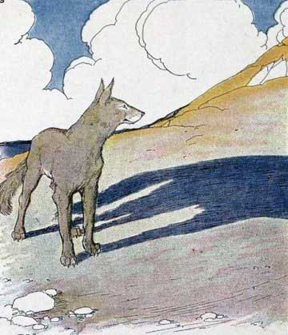

|  |
A Wolf left his lair one evening in fine spirits and an excellent appetite. As he ran, the setting sun cast his shadow far out on the ground, and it looked as if the wolf were a hundred times bigger than he really was. “Why,” exclaimed the Wolf proudly, “see how big I am! Fancy me running away from a puny Lion! I’ll show him who is fit to be king, he or I.” Just then an immense shadow blotted him out entirely, and the next instant a Lion struck him down with a single blow.
|